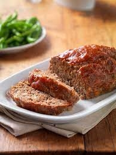

Meatloaf

Description
Meatloaf is a beefy, flavorful comfort food that goes well with macaroni and cheese or mashed potatoes.
Ingredients
- One pound of beef
- 1/2 c. diced onions
- 1/4 c. diced green peppers
- one whole egg
- 1/2 c. saltine crackers crushed
- Ketchup or tomato sauce
Instructions
- Preheat oven to 400°F
- Place beef, onions, green peppers, egg, and crackers into a large mixing bowl.
- With clean hands (or maybe a metal potato masher> mix ingredients thoroughly.
- Place meat mixture in a greased bread pan.
- Bake for 40 minutes or until temperature reads 160°F.
- Top with tomato/ketchup mixture and bake another 10 minutes.
Back to main page (Odin Recipes)